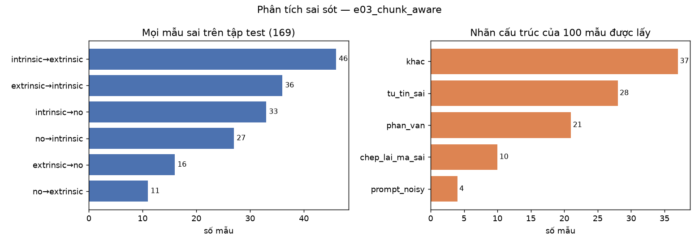
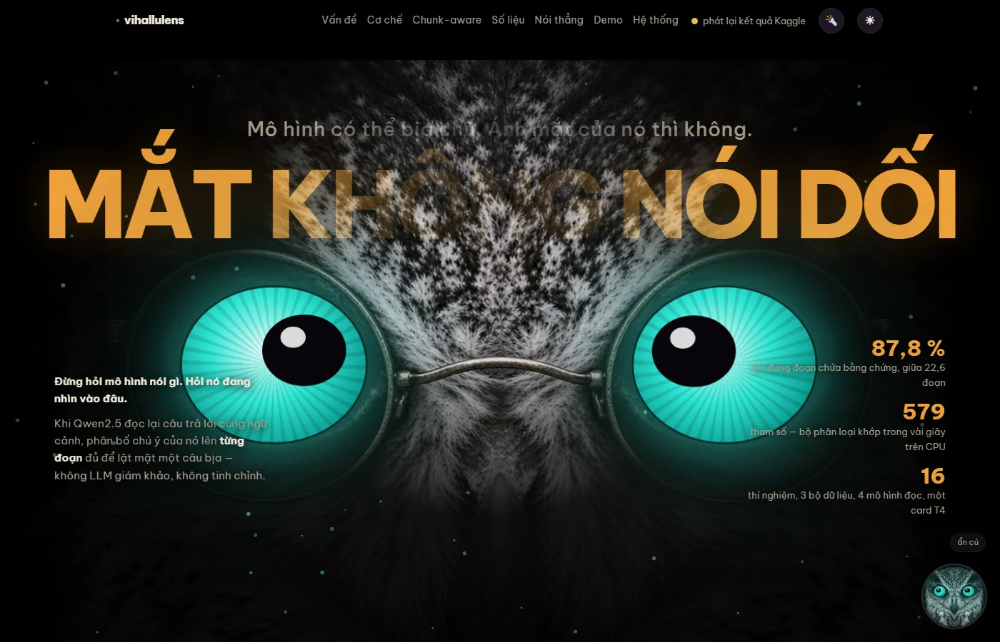

Nghiên cứu và xây dựng hệ thống phát hiện ảo giác cho mô hình ngôn ngữ lớn tăng cường truy xuất tiếng Việt dựa trên tín hiệu chú ý nội tại
Nguyễn Ngọc Lân · 22635801 Nguyễn Tấn Minh · 22643511
GVHD: ThS. Trương Vĩnh Linh · 16/09/2026

Mô hình có thể bịa chữ.
Ánh mắt của nó thì không.
Khi LLM đọc lại câu trả lời cùng ngữ cảnh đã truy xuất, phân bố chú ý của nó lên từng đoạn ngữ cảnh đủ để phân biệt trung thực, ảo giác nội tại và ảo giác ngoại lai — không cần LLM giám khảo.
Ba loại phản hồi — và bộ phát hiện chấm thật
Ngữ cảnh: Hà Nội là thủ đô của Việt Nam, nằm bên bờ sông Hồng. Thành phố có lịch sử hơn một nghìn năm, từng mang tên Thăng Long dưới triều Lý. Dân số nội thành khoảng tám triệu người. Khí hậu Hà Nội có bốn mùa rõ rệt…
"Hà Nội từng mang tên Thăng Long dưới triều Lý."
Bám sát ngữ cảnh — mô hình nhìn đúng câu thứ hai.
"…dưới triều Trần, khi dân số đã lên tới hai mươi triệu người."
Có đọc ngữ cảnh, nhưng nói lệch đi.
"Hà Nội nổi tiếng với tháp Eiffel thu nhỏ ở hồ Tây và tàu điện ngầm dài nhất Đông Nam Á."
Bịa thứ không có trong ngữ cảnh.
Ba nhãn, một câu hỏi xuyên suốt: câu trả lời có bám vào ngữ cảnh không, và nếu không thì sai kiểu nào? Điểm rủi ro = 1 − P(trung thực), là con số hệ RAG nên hành động theo.
Hệ RAG trả lời rất trôi chảy — kể cả khi không bám ngữ cảnh
Cách 1 · LLM giám khảo
mỗi mẫu · phụ thuộc API · dữ liệu rời máy · 0,664
Cách 2 · Bộ mã hóa tinh chỉnh
tham số · cần GPU · InfoXLM không hội tụ · 0,776
Cách 3 · Đặc trưng bề mặt
độ dài, trùng lặp từ · 9 tham số · rẻ nhưng yếu
→ Cần một tín hiệu có sẵn trong chính lượt đọc của mô hình: không giám khảo, không tinh chỉnh, không rời máy.
Lookback Lens — và khoảng trống nhóm em nhắm vào
LR = chú ý vào ngữ cảnh ÷ (chú ý vào ngữ cảnh + chú ý vào phần đã sinh) — một con số cho mỗi cặp (lớp, đầu).
- Chuang và cộng sự, EMNLP 2024 — bộ phân loại tuyến tính trên tỷ lệ này ngang hoặc hơn bộ dùng toàn bộ hidden state.
- Gộp cả ngữ cảnh thành một con số → không biết mô hình nhìn đoạn nào.
- Chỉ nhị phân, tiếng Anh, báo AUROC. Chưa có tiếng Việt, chưa có ba lớp.
Chunk-aware lookback ratio: không hỏi "nhìn bao nhiêu", hỏi "nhìn đoạn nào"
Năm đại lượng hình dạng phân bố
- Entropy — tản hay tập trung
- Tỷ trọng lớn nhất — đoạn được nhìn nhiều nhất chiếm bao nhiêu
- Gini — bất bình đẳng giữa các đoạn
- Khoảng cách top-1 / top-2 — có một đoạn nổi bật không
- Độ trôi — phân bố đổi thế nào giữa các bước sinh
Ba câu hỏi nghiên cứu
Một lượt đọc, không sinh token mới
Ghép prompt
Chat template Qwen: ngữ cảnh + câu hỏi ở lượt user, câu trả lời ở lượt assistant. Chốt một lần ở T07, không đổi.
Đọc lại
Qwen2.5-7B NF4, float16, bỏ lớp 27 tràn số. Teacher forcing — 437 ms một mẫu.
Hook trong lớp
Mỗi lớp, mỗi đầu: cộng chú ý của token phản hồi rơi vào từng đoạn, rồi xóa ma trận ngay.
Đặc trưng
Tỷ lệ gộp (Lookback Lens) + năm đại lượng hình dạng, chọn 32 đầu tốt nhất trên dev.
Phân loại
Hồi quy logistic 579 tham số, khớp vài giây trên CPU. Trả nhãn + điểm rủi ro.
Bốn bộ tiếng Việt công khai, ba vai trò
Chia tập theo ngữ cảnh
Hai bẫy đã đo trước khi dùng
Test gốc ViWikiFC dùng lại 100 % ngữ cảnh của train. Chỉ 67 % nhãn NEI thật sự là ngoại lai (κ 0,505, hai người gán).
16 thí nghiệm, một card T4, mọi số ghi ra file
Chỉ số
macro-F1 ba lớp kèm khoảng tin cậy 95 % bootstrap; F1 nhị phân; ECE (hiệu chỉnh xác suất).
Chi phí
ms/mẫu đo xen kẽ mỗi cấu hình một tiến trình (T4 hạ xung 10–15 % khi chạy liên tục); VRAM đỉnh; số tham số.
Kỷ luật
Chọn cách gộp đầu trên dev, test chấm một lần. Mọi số vào results/runs.jsonl, bảng sinh bằng script.
Trên ViHallu: ngang bộ mã hóa tinh chỉnh, hiệu chỉnh xác suất tốt nhất bảng
macro-F1 chunk-aware, khoảng tin cậy [0,724 – 0,789]
ECE 0,044 — tốt nhất bảng (XLM-R 0,097)
F1 nhị phân 0,864 · 579 tham số · CPU
| Phương pháp | macro-F1 | ms/mẫu | |
|---|---|---|---|
| Baseline bề mặt | 0,656 | 0,001 | |
| Gemini giám khảo (300 mẫu) | 0,664 | 8.194 | |
| PhoBERT-large tinh chỉnh | 0,749 | 12,3 | |
| XLM-R-large tinh chỉnh | 0,776 | 25,2 | |
| Lookback gộp, Qwen2.5-7B | 0,745 | 437,6 | |
| Chunk-aware, Qwen2.5-7B | 0,757 | 437,6 |
Mô hình thật sự nhìn vào đoạn bằng chứng
đầu chú ý mạnh nhất chỉ đúng đoạn chứa bằng chứng, giữa trung bình 22,6 đoạn — gấp 14,29× chọn hú họa
- Lặp lại trên bộ thứ hai với sai lệch 0,003 — thuộc tính của mô hình đọc, không của một bộ dữ liệu (E08).
- Bỏ câu bằng chứng đi → phân bố đổi đúng hướng dự đoán ở 4/4 đại lượng, 71–75 % số cặp (E08).
Chia đoạn theo câu thắng cả bốn cấu hình cửa sổ
| Chiến lược | TB đoạn | macro-F1 dev |
|---|---|---|
| Theo câu, min_words = 5 | 5,29 | 0,7768 |
| Cửa sổ 128, bước 64 | 3,29 | 0,7683 |
| Cửa sổ 64, bước 32 | 7,08 | 0,7662 |
| Đối chứng 48/48 — không chồng lấn | 5,56 | 0,7649 |
| Cửa sổ 256, bước 128 | 1,43 | 0,7589 |
Chồng lấn không phải lý do
Đối chứng phủ kín không đè, cùng số đoạn với chia theo câu, vẫn thấp hơn cả hai cỡ cửa sổ chồng lấn. Cách giải thích còn lại: ranh giới ngữ nghĩa.
Biên độ nhỏ, hướng nhất quán
Hơn cửa sổ tốt nhất 0,0085 — trong nhiễu của 700 mẫu dev — nhưng chia theo câu đứng trên cả bốn. Chốt cho mọi thí nghiệm sau.
Điều chúng em đo được — và điều chúng em không
Chunk-aware không cộng thêm điểm phân loại
Năm phép đo độc lập, năm cách đổi biến, cùng một câu trả lời — tất cả trong khoảng tin cậy rộng 0,065:
| Phép đo | Đổi gì | chunk-aware − lookback |
|---|---|---|
| E03 ViHallu | — | +0,012 |
| E12 | thêm đặc trưng bề mặt | −0,007 |
| E13 | đổi họ mô hình (Sailor2) | −0,026 |
| E14 | đổi cỡ (3B / 1.5B) | −0,013 / +0,011 |
| E15 | đổi bộ (ViWikiFC, 2.091 test) | −0,001 |
Lý do đo được: năm đại lượng có mang tín hiệu (+0,227 so với bề mặt trên ISE-DSC01) — nhưng chồng lấn 99,9 % với tỷ lệ gộp.
Nhưng nó cho thứ tỷ lệ gộp không cho được
Vị trí đóng góp trong báo cáo: định vị đúng và phân loại đúng là hai việc khác nhau — đề tài đo được cả hai, và nói rõ cái nào là gì.
Thu mô hình đọc 4,7 lần chỉ mất 0,022 macro-F1
VRAM tiết kiệm khi 7B → 1.5B; 7B → 3B tiết kiệm 56 % và nhanh gấp đôi
| Mô hình đọc | F1 | ms | VRAM | Tham số |
|---|---|---|---|---|
| 7B · lookback gộp | 0,745 | 437,6 | 8.328 | 2.271 |
| 3B · lookback gộp | 0,735 | 222,7 | 3.710 | 195 |
| 1.5B · lookback gộp | 0,723 | 608,1 | 2.718 | 1.011 |
| XLM-R-large | 0,776 | 25,2 | 11.231 | 560 tr. |
bfloat16 — T4 không có bf16 gốc. Nấc lùi nhỏ nhất mua được bộ nhớ, không mua được thời gian.XLM-R thắng cả hai trục tuyệt đối. Hướng nội tại thắng ở số tham số phải huấn luyện: 195 so với 560 triệu — ít hơn 2,87 triệu lần, mất 0,042 điểm, không rủi ro không hội tụ. Đo xen kẽ: hai lượt lệch 0,04–2,09 %.
"Trung thực hay không" chuyển được; "sai kiểu nào" thì không
E15 · Split gốc ViWikiFC, so số công bố
- Test dùng lại 100 % ngữ cảnh train — bộ mã hóa 560 triệu tham số tinh chỉnh nhớ được, hồi quy 2.271 tham số thì không.
- Chỉ 67 % nhãn NEI thật sự là ngoại lai.
- Không tinh chỉnh, chạy CPU; ECE vẫn 0,050.
- Cùng một đầu chú ý
l17_h4dẫn đầu trên cả ba bộ → vị trí đầu là thuộc tính của mô hình đọc.
E16 · Huấn luyện bộ này, chấm bộ kia
| Chiều | 3 lớp | Nhị phân |
|---|---|---|
| ViHallu → ISE-DSC01 | 0,36–0,43 | 0,63–0,66 |
| ISE-DSC01 → ViHallu | 0,55 | 0,78 |
Mỗi chiều mất đúng một lớp ảo giác — lớp hai bộ định nghĩa khác nhau: "ngoại lai" của ViHallu là GPT-4o bịa; của ISE-DSC01 là câu người viết mà ngữ cảnh không xác nhận. Tín hiệu "có bám ngữ cảnh không" chuyển được; "sai kiểu nào" gắn với từng bộ.
Bộ phát hiện thấy ảo giác tốt hơn hẳn gọi tên nó
trong 169 lỗi là nhầm giữa hai loại ảo giác với nhau; chỉ 16 % là bỏ sót thành trung thực

Năm hình dạng lỗi đọc được
Ba trong năm là giới hạn của việc chấm cả phản hồi bằng một véc-tơ trung bình → hướng phát triển: chấm theo đoạn phản hồi.
Từ kết quả nghiên cứu thành thứ người khác gọi được
📦 Thư viện Python
det = HallucinationDetector.from_pretrained("models/e03_chunk_aware.pkl")
r = det.score(context, question, response)
r.label, r.risk_score, r.chunk_attentionBundle 11,5 KB mang cả công thức dựng cột; chấm lại test 700/700 trùng.
🔌 REST · 🐳 Docker
/score, /score/batch, /health, /demo/ask; nạp mô hình trong luồng nền; cách chia đoạn lạ → 400. docker compose up một lệnh, ảnh 10,5 GB, trọng số ngoài ảnh.
🦉 Trang chủ + cú Lens
Landing + công cụ, mắt dõi con trỏ, đổi màu theo phán quyết; chế độ phát lại khi không có GPU — chép lên GitHub Pages là chạy.

Bộ phát hiện tự bắt được một ảo giác không ai dàn dựng
Hệ RAG 21 tài liệu: BM25 → Qwen2.5-3B sinh trả lời → bộ phát hiện chấm.
| Câu hỏi | Nhãn | Rủi ro |
|---|---|---|
| Đỉnh núi cao nhất Đông Dương? | no | 0,008 |
| Ai chỉ huy chiến dịch Điện Biên Phủ? | no | 0,135 |
| Phở xuất hiện ở đâu và khi nào? (tranh cãi) | extrinsic | 0,883 |
| Hồ Hoàn Kiếm gắn với truyền thuyết nào? | extrinsic | 0,997 |
| Vịnh Hạ Long thuộc tỉnh nào? (qua API) | no | 0,018 |
"…hồ Hoàn Kiếm gắn với truyền thuyết vua Lê Lợi trả gươm."
"…vua Lê Lợi trả gươm sau khi đánh đuổi giặc Minh… sau đó trở về dinh thự."
Ý đầu đúng ngoài đời nhưng không có trong ngữ cảnh; ý sau bịa hẳn. Đúng định nghĩa ngoại lai của ViHallu.
float16 không sinh được — lớp 27 tràn số → logit NaN → toàn "!". Bộ sinh phải là mô hình thứ hai (bfloat16) → lập luận "chi phí biên ≈ 0" chỉ đúng trên phần cứng có bf16 gốc.41 / 52 đầu việc — toàn bộ thực nghiệm và hệ thống đã xong
Giai đoạn 1–7 hoàn thành 11/09/2026 — sớm hơn kế hoạch khoảng 7 tuần
✓ Đã xong
- Khung repo, dữ liệu, ba mốc so sánh (T01–T19)
- Phương pháp cốt lõi, 5 thí nghiệm (T20–T27)
- Báo cáo giữa kỳ (T28)
- 7 thí nghiệm đầy đủ (T29–T35)
- Đóng gói hệ thống + trang chủ (T36–T40)
→ Đang tới
- T41 · E17 ViFactCheck (tùy chọn)
- T42–T47 · viết chương 1–8
- Lượt đọc tay 100 mẫu sai
- Chỉnh trang chủ, ảnh cử chỉ cú Lens
📅 Mốc
- Báo cáo cuối kỳ: trước 22/11
- Phản biện: 23–29/11
- Bảo vệ hội đồng: 30/11 – 06/12
Nói rõ giới hạn — và hướng đi tiếp
Hạn chế
- Nhóm hình dạng theo đoạn không cộng thêm điểm phân loại (5 phép đo).
- Bộ phân loại ba lớp không chuyển chéo bộ — ba lớp không cùng nghĩa giữa các bộ.
- Chấm cả phản hồi bằng một véc-tơ trung bình → mệnh đề bịa bị nhòa.
- Con số chi phí gắn với T4; Docker chưa kiểm trên máy GPU.
- Lượt đọc tay 100 mẫu sai chưa hoàn tất.
Hướng phát triển
- Chấm theo đoạn phản hồi, tách "nhìn vào đâu" khỏi "nói gì về chỗ đó".
- Huấn luyện gộp nhiều bộ, hoặc chấp nhận bài toán nhị phân cho bộ phát hiện dùng chung.
- Đo chi phí biên trên hệ RAG thật với phần cứng có
bfloat16gốc. - E17 chuyển miền sang ViFactCheck (nếu còn thời gian).
Bốn câu hỏi
Định vị đóng góp trong quyển báo cáo
Đóng góp chính là bằng chứng cơ chế và khả năng chỉ được đoạn nào; về điểm phân loại, báo cáo trung thực là không phân biệt được với 0. Hướng này có hợp với một khóa luận không?
Bố cục chương đánh giá
Xếp theo ba câu hỏi nghiên cứu, thay vì theo thứ tự 16 thí nghiệm?
E17 — ViFactCheck
Làm thí nghiệm chuyển miền, hay dồn sức viết và nêu nó làm hướng phát triển?
Bộ phát hiện mặc định của hệ thống
Giữ 7B (nhất quán với mọi bảng kết quả) hay đổi 3B (điểm cân bằng chi phí trên T4)?

Mắt không nói dối.
Em cảm ơn thầy. · github.com/wsunicorn/vihallulens